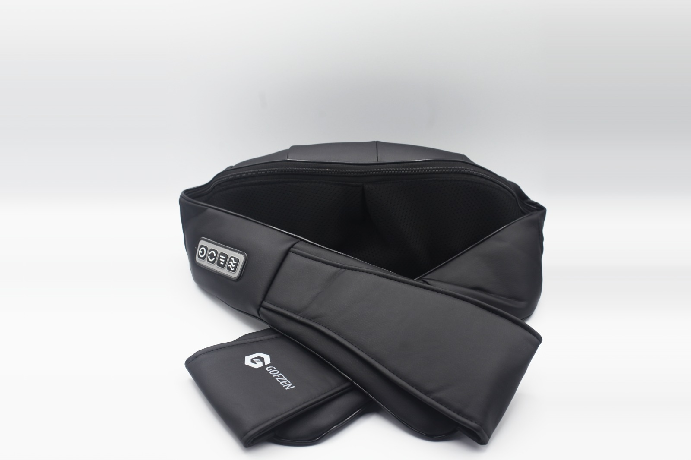

GOFZEN
Nouvelle génération de nos Masseurs Électriques Cou et Épaules
GOFZEN
Le bien-être est une question d'habitudes quotidiennes simples qui vous aident à prendre soin de vous et de votre famille. Nos solutions super-innovantes vous permettent de vivre votre bien-être au quotidien en toute simplicité.

Une Conception Magistrale
Les nœuds de Massage à pétrissage profond aident à étendre et à soulager les tiraillements musculaires avec la fonction de chauffage La conception ergonomique avec un corps ultra mince de 6 cm est parfaite pour une utilisation sur les zones du bas et du haut du dos, du cou, de l'abdomen, du mollet et des cuisses. Équipé d'un dispositif de protection contre la surchauffe et programmé avec arrêt automatique de 15 minutes pour assurer la sécurité.
Efficace
Grâce à la technologie 'impulsion à cycle bas, 3-5cm de profondeur sous la peau, ouvrez les points de douleur et les méridiens, réduisez douleur cervicale.
50% de réduction
GOFZEN | Masseur Électrique Cou et Épaules
€51,99 €99,99 Épuisé
Livraison offerte
Promotion expire bientôt

.png)


le Masseur Électrique Cou et Épaules de chez GOFZEN est le meilleur de sa génération fiable efficace et haute gamme
✔️ Vitesse de massage réglable - Réglez facilement la vitesse de massage entre 3 niveaux (faible, moyen et élevé), selon vos préférences.
✔️ Massage à pétrissage profond - Comprend 8 nœuds de massage Shiatsu à pétrissage profond pour apaiser la fatigue et soulager les tensions musculaires
✔️ Chaleur douce - Une chaleur constante transmet une chaleur douce aux muscles et aux ligaments pour soulager la fatigue ; s'éteint automatiquement au bout de 20 minutes.
✔️ Ergonomique pour une utilisation sur tout le corps - Les nœuds de massage par pétrissage à rotation 3D sont conçus en forme de U ergonomique, parfaits pour le cou, les épaules, le dos et les cuisses pour se détendre partout : au bureau, dans la voiture et à la maison